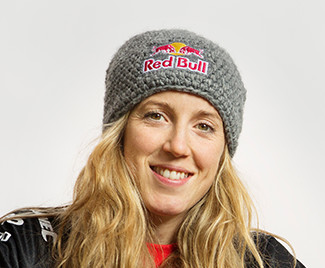

|
Rachel is the most awarded British Mountain biker in the history of the sport with 26 World Cup wins to her name. On the global stage, Rachel dominates Women’s Downhill Mountain-biking. Her international titles now include twice European Champion, four times World Champion and four times World Cup Champion. She holds seven British National titles.
2015 was indisputably Rachel’s year with wins at 6 out of 7 World Cup Rounds, the Overall Series title and a World Championship win. Only long-time rival Emmeline Ragot got close to Rachel all season with her victory at Lourdes Round 1 (Rachel was second) so it was particularly poignant when Rachel carried the injured Ragot onto the podium at the final round of the series in Val di Sole.
As seems fairly standard with the Atherton family the results don’t tell half of the story. Rachel had struggled hugely in 2014. She picked up a glandular fever type illness at Round 1 of the World Cup in South Africa which lingered on right through the season, taking its toll on Rachel’s famous strength. She finished second overall in a season included a UK National Championship, 2 World Cup wins and 2nd by a cruel 0.08 seconds in the World Championships) – That’s an amazing season by anybody’s standards but Rachel was distraught.
|
 |